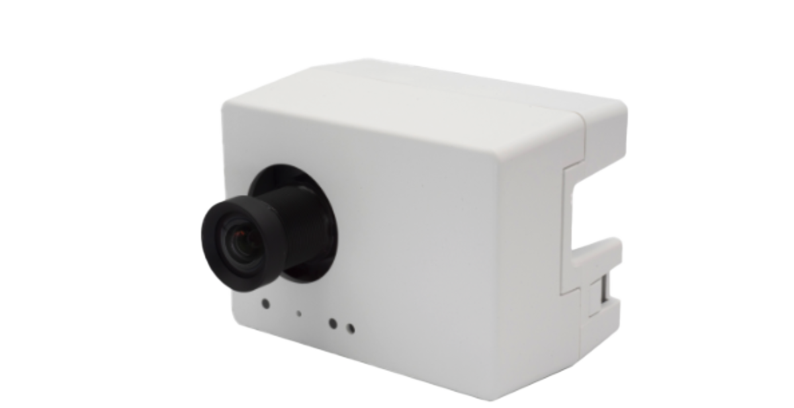

A secure remote-access path for resource-constrained embedded systems.
Satoru Akita / Sony Semiconductor Solutions
Apache NuttX
AITRIOS edge AI device
1 / 7
Today I will talk about WireGuard for Apache NuttX.
||
The project is a WireGuard VPN implementation for Apache NuttX, exposed as a wg0 network device. The practical goal is simple: enable secure remote access to NuttX-based devices after they have been deployed in the field.
Project Overview
NuttX is used where physical access is expensive.
Apache NuttX
A POSIX-compliant RTOS designed for resource-constrained environments, with its own TCP/IP stack and BSD socket interface.

Edge AI cameras
AITRIOS edge AI devices are deployed in logistics warehouses, retail stores, and traffic monitoring systems.
SPRESENSE
A compact, low-power microcontroller board used in edge computing and mission-critical applications.
Images: Apache NuttX, Sony Semiconductor Solutions / SPRESENSE, AITRIOS
2 / 7
This slide is mostly context. NuttX is not just a hobby RTOS. It is used in real embedded systems, including edge AI cameras and SPRESENSE-based projects.
||
The wording here is intentionally close to the proposal: Apache NuttX is a POSIX-compliant RTOS designed for resource-constrained environments. It powers embedded systems ranging from UAVs and nanosatellites to edge AI cameras running on ESP32.
||
For these devices, physical access becomes difficult after deployment. That is where secure remote access starts to matter.
Why This Matters
Secure remote access is still a real gap.
Remote diagnostics
Devices deployed in the field need diagnostics and maintenance without assuming a serial cable or local operator.
Firmware updates
Remote and untrusted networks make encrypted tunnels a critical requirement for production devices.
However, NuttX currently has no native, lightweight VPN capability.
3 / 7
The motivation is also taken from the proposal and README.
||
Remote and secure access to NuttX devices is a real, unsolved problem across many domains: edge AI and industrial IoT, satellite and space hardware, unmanned infrastructure, and secure device mesh.
||
Without a VPN, the realistic options are to expose a global IP, build a bespoke protocol, or accept a vendor cloud. Each option is unappealing for its own reasons. The missing capability is a standard VPN path that NuttX developers can enable and use.
What WireGuard Adds
A regular network interface, backed by an encrypted tunnel.
Before
With WireGuard
Access
Serial cable or custom path
Network access through wg0
Transport
Plain or application-specific
Encrypted tunnel over UDP
Tools
Special-purpose workflow
telnet, HTTP, and existing IP tools
Applications see wg0 as a normal NuttX network device.
4 / 7
The design goal is not to invent another remote-management tool.
||
WireGuard is exposed as a NuttX network device called wg0. From the application side, it behaves like a regular network interface. Routing and existing IP-based tools can work over the encrypted tunnel.
||
This is why WireGuard is a good fit. It is a modern, lightweight VPN protocol using Curve25519, ChaCha20-Poly1305, and BLAKE2s, while keeping the implementation small enough to run on microcontrollers.
Implementation
Keep the protocol core, replace the network glue.
Part
Approach
Size
Protocol and crypto
Used byte-identical from wireguard-lwip
3,079 lines
Platform hooks
Implemented with NuttX POSIX APIs
186 lines
Network glue
Replaced lwIP netif with NuttX netdev
2,157 lines
Result: the same code runs on x86_64, Cortex-A7, Xtensa LX7, and Cortex-M4F.
NuttX has its own TCP/IP stack, so wireguardif.c could not be compiled as-is.
5 / 7
The implementation is built on smartalock/wireguard-lwip.
||
The WireGuard protocol core and cryptographic primitives are portable C and can be used as-is. The OS-specific behavior is isolated behind four platform functions: monotonic time, random bytes, TAI64N time, and load detection.
||
The major work is the network integration layer. NuttX does not use lwIP. It has its own TCP/IP stack, so I replaced the lwIP netif glue with NuttX netdev and socket APIs. The wg0 device is registered with netdev_register, and the encrypted transport goes through a UDP socket.
Status
Verified on real hardware against real WireGuard peers.
Confirmed on ESP32-S3
Real Wi-Fi, official Windows peer, telnet, HTTP, 7 MB transfer, rekey, and recovery from power loss.
Measured so far
Tunnelled TCP throughput: 260 KiB/s. Longest observed run: 4 h 28 min.
6 / 7
The tunnel works end to end on hardware, is configurable at runtime, and survives a power cycle. What remains is upstream submission.
||
The important point is that the peers are real WireGuard implementations: the Linux kernel module and the official Windows client. Interoperating with another copy of this code would prove much less.
||
On ESP32-S3, I confirmed real Wi-Fi, telnet, HTTP, a 7 MB transfer, rekey, and recovery from power loss. The current throughput is about 260 KiB/s over Wi-Fi, tunnelled TCP.
Upstream
Make it available to NuttX developers immediately.
Add a missing capabilityThe first standard VPN solution for NuttX.
Submit to apache/nuttx-appsSo developers can enable WireGuard with CONFIG_NET_WIREGUARD=y.
Document a reusable porting patternA bridge from lwIP-based network libraries to NuttX's native stack.
The goal is not just a demo. The goal is an upstreamable component.
7 / 7
The upstream goal is the main point of the project.
||
The contribution is not only adding a missing VPN capability. It also establishes a pattern for porting lwIP-based network libraries to NuttX. Many embedded networking libraries are written for lwIP, but NuttX has its own stack. This project demonstrates one concrete bridge.
||
For a Returns audience, this is the message I want to end with: a small technical discomfort from real work can become an upstream contribution if it is shaped, tested, and documented carefully.
 AITRIOS edge AI device
AITRIOS edge AI device